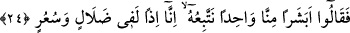
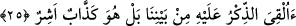
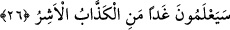

24. «Aramızdan bir beşere mi uyacağız? O takdirde biz apaçık bir sapıklık ve
çılgınlık etmiş oluruz» dediler.
“Bizden bir insana mı uyacağız?” Bizim gibi insan cinsinden olan ve arkasından
gideni bulunmayan veyahut onların önde gelen eşrâfından değil de rastgele ferdlerinden
birinin emrine mi uyacağız? Toplumdan biri olmak ve insan cinsinden olup melek
olmamak uyulmaya mânidir, şeklindeki kanâatlerini anlatmaktadır. “__WORD__ kelimesi
“minnâ” kelimesinden önce gelseydi, bu nükte anlaşılmazdı.
“O takdirde biz apaçık bir sapıklık ve çılgınlık içine düşmüş oluruz dediler.” Yâni,
biz kalabalık bir topluluk olduğumuz, o da tek başına olup melek de olmadığı halde -o
inkârcıların inançlarına göre-, insan olmak paygamber olmaya engeldir. Ona uyarsak
doğrudan sapıklığa düşmüş ve delilik etmiş oluruz. Bu ise aklın gerektirdiği yoldan
ayrılmaktır. Denildi ki: Sâlih (a.s.) onlara: “Eğer bana ve emirlerime uymazsanız,
haktan ayrılmış, sapıklığa düşmüş ve cehennemlik olmuş olursunuz,” derdi. Onlar da
kibir ve azgınlığın son sınırında oldukları için o sözü tersine çevirerek, “aksine senin
emrine uyarsak dediğin gibi oluruz,” dediler.
25. «Vahiy, aramızda ona mı verildi? Hayır o, yalancı ve şımarığın biridir»
(dediler.)
“Zikir” kitap ve vahiy “aramızda ona mı bırakıldı?” Halbuki bizim aramızda bu işe
ondan daha lâyık olanlar var. Buradaki soru, vahyin ve peygamberliğin Sâlih (a.s.)’a
verildiğini inkâr için sorulmuş oluyor. Yâni onlar demiş oluyorlar ki, “ondan, Semûd
kavmi içinde daha zengin ve durumu daha iyi olanlar bulunduğu halde yalnız başına
peygamberlik ona mı tahsis edilip verildi?”
“Hayır o yalancı ve şımarığın biridir.” Hayır iş öyle değil, tam tersine böyledir.
Kibir ve azgınlığı onu iddiâ ettiği peygamberlikle, bizim başımıza geçmeğe yöneltmiştir,
dediler. Âyet-i kerîme’de geçen “esir” kelimesi “kibirlenmek, çok sevinmek, hırçınlık”
anlamına gelir.